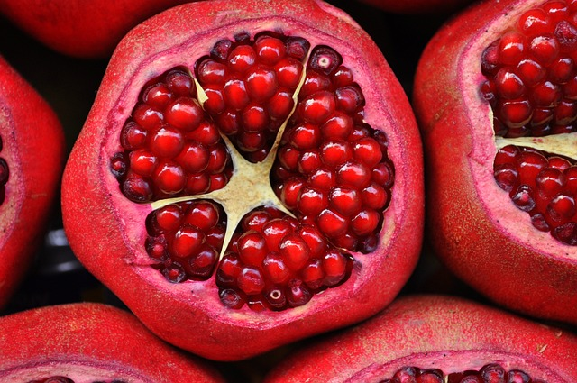

Creativity Assignment Uzma Ahmed GB1-094 Tech Force Pakistan
Health Benefits of Oranges
1) Protects your cells from damage.
2) Helps your body make collagen, a protein that heals wounds and gives you smoother skin. 3) Makes it easier to absorb iron to fight anemia. 4)
Boosts your immune system, your body's defense against germs.
Health Benefits of Banana's
1) Bananas are a popular fruit with many potential health benefits. 2) They may improve your digestion and heart health, 3) thanks to their fiber and antioxidant content. 4) Plus, they may support weight loss because they're relatively low in calories, 5) nutrient-dense, and filling.

Health Benefits of Pomegranate
1) Heart health benefits.
2) Anti-inflammatory properties.
3) Anti-cancer phytonutrients (similar to those of broccoli)
Urinary health support.
4) Digestive health benefits.
5) Elevated endurance.
Health Benefits of Strawberries
1) Antioxidants in strawberries, 2) including vitamin C, can support your immune system and may lower your chances of getting sick when you're around germs. 3) They may also help curb inflammation, 4) manage your blood sugar, 5) and guard against health conditions like high cholesterol, cancer, heart disease, stroke, and diabetes.
Health Benefits of Watermelon
1) It's frontloaded with essential nutrients. ...
2) It offers a big dose of lycopene. ...
3) Watermelon helps keeps you hydrated. ...
4) It adds to healthy digestion. ...
5) It could help with weight management. ...
6) It may improve heart health. ...
7) It could work to reduce cancer risk.
Health Benefits of Mangoes
1) May Protect Against Some Diseases. The fruit packs plenty of polyphenols, which can be found in the peel, pulp, and seed kernel of the fruit. ...
2) May Support Heart Health. ...
3) the Immune System. ...
4) Improve Skin Health. ...
5) May Ease Constipation. ...
6) Support Eye Health.
Health Benefits of Gava
1) May Help Lower Blood Sugar Levels. ...
2) May Boost Heart Health. ...
3) May Help Relieve Painful Symptoms of Menstruation. ...
4) May Benefit Your Digestive System. ...
5) May Aid Weight Loss. ...
6) May Have an Anticancer Effect. ...
7) May Help Boost Your Immunity.
Health Benefits of Cherry
1) They're low-GI (glycaemic index) ...
2) They're a heart-healthy choice. ...
3) May reduce blood pressure. ...
4) May help manage cholesterol. ...
5) May help manage blood sugar levels. ...
6) May help inflammatory conditions. ...
7) May enhance recovery after exercise. ...
8) May improve sleep.
Health Benefits of Apricot
Rich in protective plant compounds. ...
1) May support vision and protect eyesight. ...
2) May support youthful skin. ...
3) May support gut health. ...
4) May support the cardiovascular system. ...
5) May protect the liver. ...
6) May help in our fight against cancer. ...
7) May alleviate menopausal symptoms.
Health Benefits of Lemon
1) Lemons may aid weight loss and reduce your risk of heart disease, anemia, kidney stones, digestive issues, and cancer. Not only are lemons a very healthy fruit, but they also have a distinct, pleasant taste and smell that make them a great addition to foods and drinks.
Health Benefits of Grapes
1) Grapes are a juicy, delicious snack that can provide you with a variety of health benefits. Grapes are rich in nutrients, boost your immunity, provide antioxidants, promote better sleeps, improve the heath of your heart, protect your eyes, and keep you well hydrated.
Health Benefits of Pineapple
1) Bromelain, the digestive enzyme in pineapple, has anti-inflammatory and pain-relieving properties. This helps when you have an infection, like sinusitis, or an injury, like a sprain or burn. It also offsets the joint pain of osteoarthritis. The vitamin C in pineapple juice also keeps inflammation levels low.
Health Benefits of Apple
1) They're rich in fiber and antioxidants. Eating them is linked to a lower chance of getting many chronic conditions, including diabetes, heart disease, and cancer. Apples may also promote weight loss and improve gut and brain health.
.jpg)